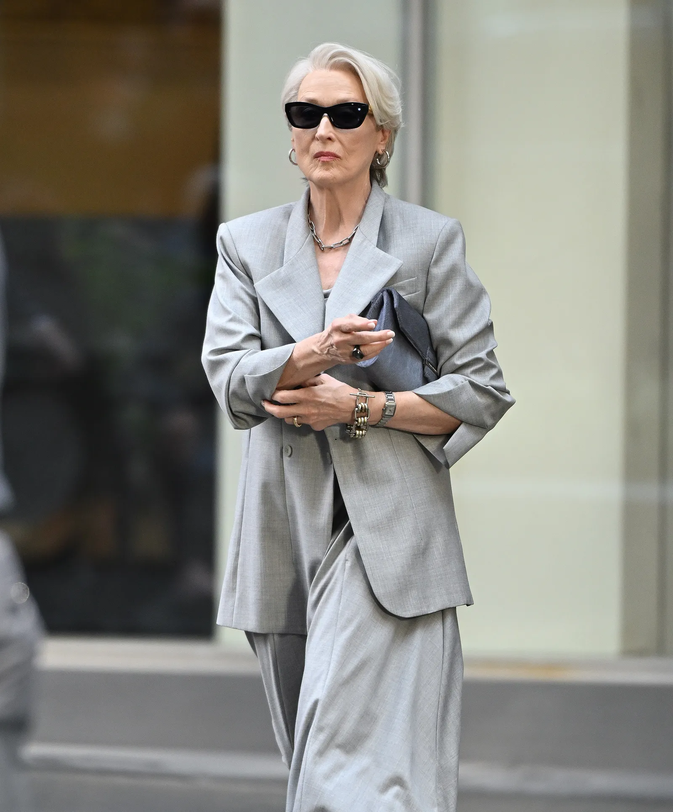
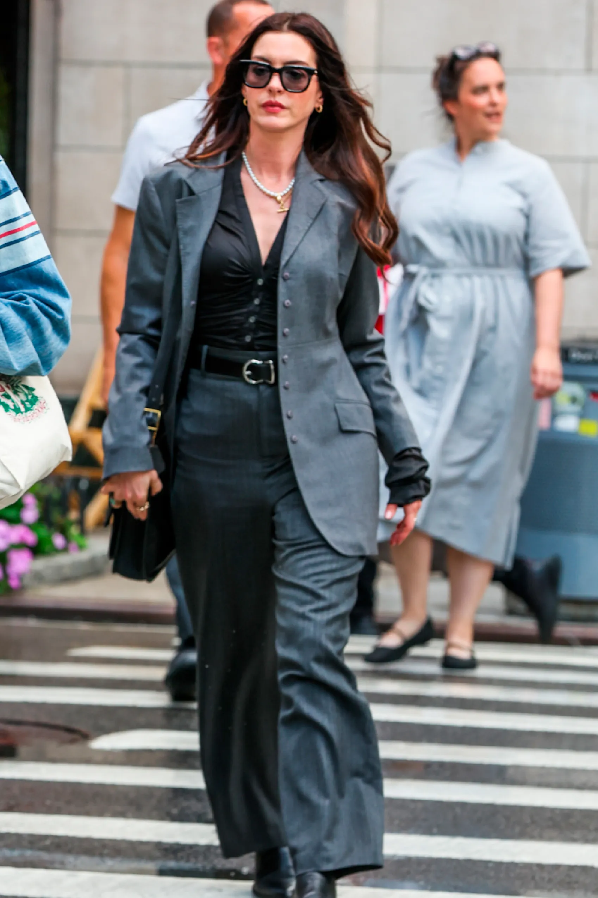
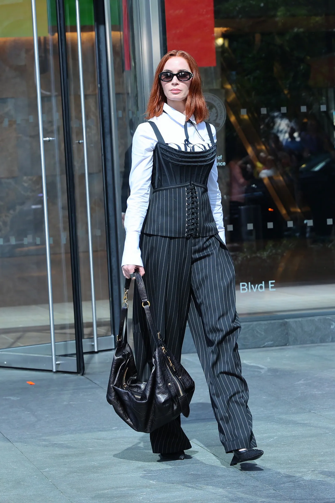
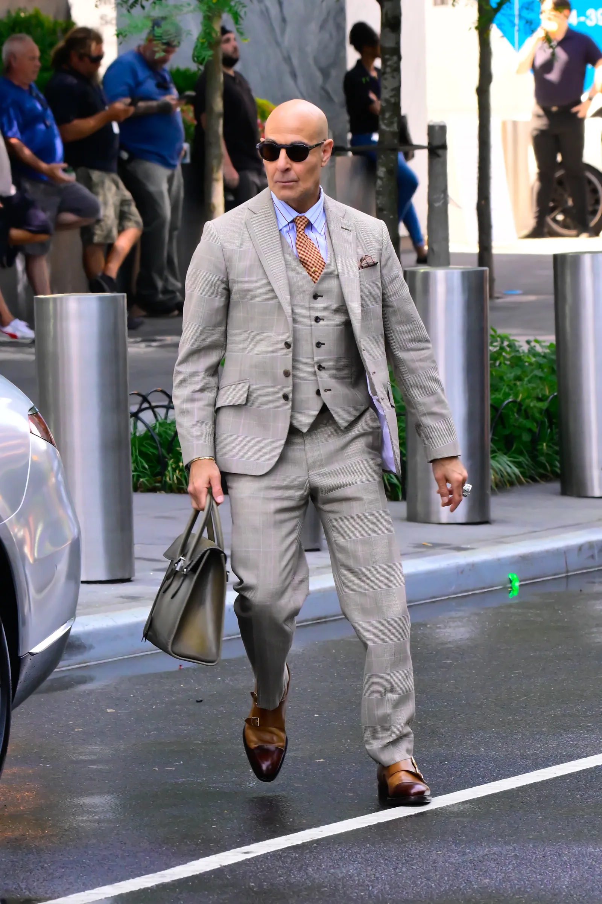

Regresa a su papel como Miranda Priestly, la temida editora en jefe de Runway, una de las revistas de moda más relevantes de la industria. Aunque el personaje es ficción, se cree que está inspirado en Anna Wintour, pues previo a la publicación de la novela que inspiró a la cinta, Lauren Weisberger trabajó en Vogue como asistente de Wintour. En esta secuela, Miranda se enfrenta a los cambios del mundo editorial mientras se reencuentra con figuras del pasado y lucha por adaptarse al entorno digital.

Si el patito feo fuera una persona, Andrea Sachs sería su reencarnación. En la primera cinta, acompañamos el viaje y arco de Andy dentro de la industria de la moda: desde su primera impresión utilizando el suéter azul cerúleo con el que pretendía no estar interesada en la moda, hasta las botas de Chanel con las que anunció su transformación en la oficina. En una lucha entre alcanzar el éxito o mantenerse fiel a su persona, el final de la primera parte mostró a Andy tomar la decisión de alejarse de Miranda y renunciar a su trabajo. Finalmente sabremos el rumbo que tomó su vida tras dejar de lado el sueño de todo aficionado de la moda.

Mantendrá su papel como Emily Charlton, ex asistente de Miranda y compañera de trabajo de Andy. A diferencia de Sachs, Emily vive por la moda y está dispuesta a lo que sea para mantener su lugar dentro de esta industria. A pesar del maltrato de Miranda y su rivalidad con Andy, Emily se mantuvo fiel a su objetivo, incluso tras la renuncia de su compañera. En esta segunda parte, se espera que podamos ver a su personaje en una nueva etapa de su carrera, en donde, en un giro de tuerca, competirá con rivales inesperados y podría ser la persona que Miranda necesita para salvar a Runway del declive.

Regresa como Nigel Kipling. Anteriormente, lo vimos como el director de moda en Runway, quien además de asistir directamente a Miranda en las decisiones estilísticas de la revista, se convirtió en un aliado de Andrea y la clave para su transformación. En esta secuela, acompaña a Miranda y Andrea en un nuevo reto.